Electron transport excercise 1
This script runs a multi-stream electron transport calculation for electron-precipitation with 1 keV energy and a range of pitch-angle distributions. The code is set-up such that it should run automatically. However, it might be easier to understand what is going on if you run the script interactively, you do this by opening the script in the matlab editor (at the command-line prompt type: edit Electron_transport_excercise_1) Then you can run the script by pushing the "run and advance" icon/button. to run the current section and then advance to the next. The actual electron transport step takes a fair bit of time (~30-40 minutes)
Contents
- Set-up 1
- Set-up 2
- Specification of energy and pitch-angle distribution
- Electron transport calculations, case-by-case
- Results and analysis 1 electron-fluxes
- 1, electron fluxes as functions of altitude and energy
- 2 electron fluxes at 1 keV
- 3 Pitch-angle spectra at highest altitude
- Then we present the same plots in rectangular grids for easier
- Excitation and ionization-rates
- Same thing with the production of N2(B3) emitting at 6730 Å
Set-up 1
Here we set variables for the running of this script You should not need to change these
Science_grade_not_demo = 1; % To run with an OK energy-grid plot_figs = 1; % To plot intermediate figures during % set-up, to disable set to zero print_figs = 0; % To print the intermediate figures % during set-up, change to one if Science_grade_not_demo n_dirs = 1 + 180*4; stepE = 1; else % Then demo with coarser energy-grid n_dirs = 1 + 180*4; stepE = 30; end
Set-up 2
the setup4etrpd10streamsB script prepares thermospheric densities and temperatures (for the electron collisions), magnetic field-strength (for the magnetic mirroring), the energy-grid and collision-cross-sections (elastic, inelastic and ionization), the phase-functions, and specifies the pitch-angle discretization and calculates the probabillities for scattering between different pitch-angle streams. * Look at the plots and judge whether they are sensible - i.e. for example no obvious errors in units etc.
if ~exist('setup_completed','var') || setup_completed ~= 1 setup4etrptd10streamsB end
Specification of energy and pitch-angle distribution
for electron precipitation. Here the first element in each row is the magnetic field-strength, if we set it to an array of ones there will be no magnetic mirror-force, the second element describes which pitch-angle-streams will have the precipitation. the third element describes the energy and width of the Gaussian precipitation, the last element is a file-name for saving the results to for each case.
par_list4Ie = { B, 1, [1e3 100], 'Bm_Beam1-1keV-1';% Electron-precipitation in stream #1 0-10 degrees off B
B, 2, [1e3 100], 'Bm_Beam2-1keV-1';% Electron-precipitation in stream #2 10-30 degrees off B
B, 3, [1e3 100], 'Bm_Beam3-1keV-1';% Electron-precipitation in stream #3 30-60 degrees off B
B, 4, [1e3 100], 'Bm_Beam4-1keV-1';% Electron-precipitation in stream #4 60-80 degrees off B
B, 5, [1e3 100], 'Bm_Beam5-1keV-1';% Electron-precipitation in stream #5 80-90 degrees off B
B, 1:5, [1e3 100], 'Bm_ISO15-1keV-1' % Electron-precipitation in stream #1-5 0-90 degrees off B
ones(size(B)), 1, [1e3 100], 'nB_Beam1-1keV-1';% Electron-precipitation in stream #1 0-10 degrees off B
ones(size(B)), 2, [1e3 100], 'nB_Beam2-1keV-1';% Electron-precipitation in stream #2 10-30 degrees off B
ones(size(B)), 3, [1e3 100], 'nB_Beam3-1keV-1';% Electron-precipitation in stream #3 30-60 degrees off B
ones(size(B)), 4, [1e3 100], 'nB_Beam4-1keV-1';% Electron-precipitation in stream #4 60-80 degrees off B
ones(size(B)), 5, [1e3 100], 'nB_Beam5-1keV-1';% Electron-precipitation in stream #5 80-90 degrees off B
ones(size(B)), 1:5, [1e3 100], 'nB_ISO15-1keV-1'};% Electron-precipitation in stream #1-5 0-90 degrees off B
Electron transport calculations, case-by-case
Here we loop over the 12 different cases
for i_pars = 1:size(par_list4Ie,1) %Run_section(1) disp('===========================================================================') disp(par_list4Ie(i_pars,:)) disp('---------------------------------------------------------------------------') B_curr = par_list4Ie{i_pars,1}; % Magnetic field; idx_BW = par_list4Ie{i_pars,2}; % pitch-angle-stream-index(es) E0dE = par_list4Ie{i_pars,3} % Peak energy and width of Gaussian savedir = par_list4Ie{i_pars,4} % Directory for saving results to curr_par = par_list4Ie(i_pars,:); % Find a suitable energy-range iEmax = find( cumsum(exp(-(E-E0dE(1)).^2/E0dE(2)^2)) < ... 0.9999*sum(exp(-(E-E0dE(1)).^2/E0dE(2)^2)),1,'last'); [SUCCESS,MESSAGE,MESSAGEID] = mkdir(savedir); % Here we save away the back-ground parameters for each case save(fullfile(savedir,'neutral_atm.mat'),'Te','h_atm','nN2','nO','nO2','ne') save(fullfile(savedir,'curr_par.mat'),'curr_par') fprintf('%d: %s\n',i_pars,datestr(now,'HH:MM:SS')) % No photo-electron-production for this excercise - so we set % that parameter to zero at all altitudes and energies p_e_q = zeros(length(h_atm),length(E(1:iEmax))); % Specification of energy-distribution of the electron precipitation for iBeam = numel(c_o_mu):-1:1 Ie_oftGB{iBeam} = @(E) zeros(size(E)); % set them all to zero end i_Hots = idx_BW; for i_curr_Beam = i_Hots, disp(i_curr_Beam) % Then we set the ones with precipitation to % a Gaussian Ie_oftGB{i_curr_Beam} = @(Ei) 1e12*exp(-(Ei-E0dE(1,1)).^2/E0dE(1,2))*B_W(i_curr_Beam)/sum(B_W(i_Hots)); end % Here is where the electron-transport takes place: [Ie_zE] = Ie_M_stream_4_auroraB(h_atm,mag_ze,B_curr,E(1:iEmax),mu_lims,mu_scatterings,Ie_oftGB,p_e_q,ne,Te,... nO,O_levels,XsO(:,1:iEmax),@O_e_2nd_dist,@phase_fcn_O,... nN2,N2_levels,XsN2(:,1:iEmax),@N2_e_2nd_dist,@phase_fcn_N2,... nO2,O2_levels,XsO2(:,1:iEmax),@O2_e_2nd_dist,@phase_fcn_O2); savefile = fullfile(savedir,sprintf('IeSteady_1.mat')); save(savefile,'Ie_zE','E','mu_lims','h_atm','Ie_oftGB','mu_scatterings','curr_par','-v7.3') Ie_zE_all{i_pars} = Ie_zE; end
===========================================================================
{515x1 double} {[1]} {1x2 double} {'Bm_Beam1-1keV-1'}
---------------------------------------------------------------------------
E0dE =
1000 100
savedir =
'Bm_Beam1-1keV-1'
1: 12:35:13
1
===========================================================================
{515x1 double} {[2]} {1x2 double} {'Bm_Beam2-1keV-1'}
---------------------------------------------------------------------------
E0dE =
1000 100
savedir =
'Bm_Beam2-1keV-1'
2: 12:37:51
2
===========================================================================
{515x1 double} {[3]} {1x2 double} {'Bm_Beam3-1keV-1'}
---------------------------------------------------------------------------
E0dE =
1000 100
savedir =
'Bm_Beam3-1keV-1'
3: 12:40:03
3
===========================================================================
{515x1 double} {[4]} {1x2 double} {'Bm_Beam4-1keV-1'}
---------------------------------------------------------------------------
E0dE =
1000 100
savedir =
'Bm_Beam4-1keV-1'
4: 12:42:14
4
===========================================================================
{515x1 double} {[5]} {1x2 double} {'Bm_Beam5-1keV-1'}
---------------------------------------------------------------------------
E0dE =
1000 100
savedir =
'Bm_Beam5-1keV-1'
5: 12:44:25
5
===========================================================================
{515x1 double} {1x5 double} {1x2 double} {'Bm_ISO15-1keV-1'}
---------------------------------------------------------------------------
E0dE =
1000 100
savedir =
'Bm_ISO15-1keV-1'
6: 12:46:55
1
2
3
4
5
===========================================================================
{515x1 double} {[1]} {1x2 double} {'nB_Beam1-1keV-1'}
---------------------------------------------------------------------------
E0dE =
1000 100
savedir =
'nB_Beam1-1keV-1'
7: 12:49:29
1
===========================================================================
{515x1 double} {[2]} {1x2 double} {'nB_Beam2-1keV-1'}
---------------------------------------------------------------------------
E0dE =
1000 100
savedir =
'nB_Beam2-1keV-1'
8: 12:51:56
2
===========================================================================
{515x1 double} {[3]} {1x2 double} {'nB_Beam3-1keV-1'}
---------------------------------------------------------------------------
E0dE =
1000 100
savedir =
'nB_Beam3-1keV-1'
9: 12:54:11
3
===========================================================================
{515x1 double} {[4]} {1x2 double} {'nB_Beam4-1keV-1'}
---------------------------------------------------------------------------
E0dE =
1000 100
savedir =
'nB_Beam4-1keV-1'
10: 12:56:27
4
===========================================================================
{515x1 double} {[5]} {1x2 double} {'nB_Beam5-1keV-1'}
---------------------------------------------------------------------------
E0dE =
1000 100
savedir =
'nB_Beam5-1keV-1'
11: 12:58:37
5
===========================================================================
{515x1 double} {1x5 double} {1x2 double} {'nB_ISO15-1keV-1'}
---------------------------------------------------------------------------
E0dE =
1000 100
savedir =
'nB_ISO15-1keV-1'
12: 13:00:47
1
2
3
4
5
Results and analysis 1 electron-fluxes
1, electron fluxes as functions of altitude and energy
pitch-angle-stream by pitch-angle-stream * Study differences between the electron-fluxes in the different cases (compare cases with precipitation in the same pitch-angle-stream with and without the magnetic mirror-force first, then the cases with precipitation in different directions.)
fignames = {'stream #1 B-field-mirror-force',
'stream #2 B-field-mirror-force',
'stream #3 B-field-mirror-force',
'stream #4 B-field-mirror-force',
'stream #5 B-field-mirror-force',
'streams #1-5 B-field-mirror-force',
'stream #1 no mirror-force',
'stream #2 no mirror-force',
'stream #3 no mirror-force',
'stream #4 no mirror-force',
'stream #5 no mirror-force',
'streams #1-5 no mirror-force'};
for i1 = 1:12
figure('name',fignames{i1},'position',[104 534 1186 435])
plot_IezE_3DEz(h_atm,E(1:size(Ie_zE_all{i1},2)),Ie_zE_all{i1},dE(1:size(Ie_zE_all{i1},2)),BeamW,[6 12],spp, theta_str);
end
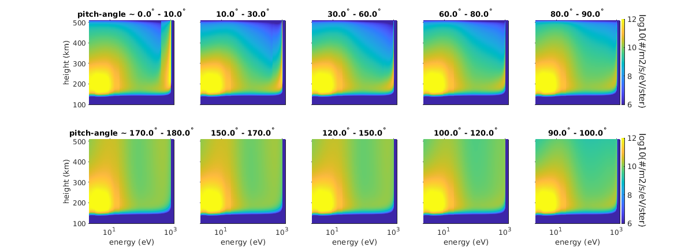 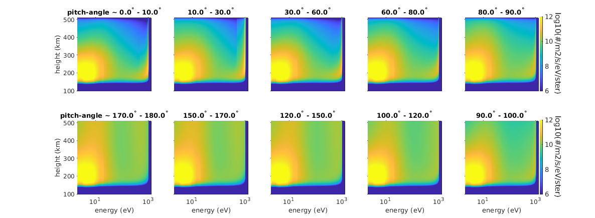 2 electron fluxes at 1 keV
as function of pitch-angle-stream-number and altitude To look at the effect of the magnetic mirroring we can look at the altitude variation of electron-fluxes at 1 keV. Here we plot the electron fluxes in the 10 streams. * Explain the differences between the different cases (Magnetic mirroring/no mirroring) and how that effect varies between precipitation in different directions.
[dE1000,iE1000] = min(abs(E-1e3)); figure('name','Ie(E=1keV,z,\mu),B-mirror') for i1 = 1:6, Ie1000 = reshape(Ie_zE_all{i1}(:,iE1000),numel(h_atm),10)./repmat(BeamW*2*pi*dE(iE1000),size(h_atm)); subplot(2,3,i1) pcolor(0.5:10.5,h_atm/1e3,log10(Ie1000(:,[1:end,end]))),shading flat,caxis([-6 0]+max(caxis)) cx(i1+6,:) = caxis; set(gca,'xtick',1:10,'tickdir','out','box','off') if i1 == 3 || i1 == 6 colorbar_labeled('e^-/m^2/s/ster/eV','log') else colorbar_labeled('','log') end if i1 == 1 || i1 == 4 ylabel('height (km)') else set(gca,'yticklabel','') end if i1 > 3 xlabel('pitch-angle-stream #') end end figure('name','Ie(E=1keV,z,\mu),no-mirror') for i1 = 1:6, Ie1000 = reshape(Ie_zE_all{i1+6}(:,iE1000),numel(h_atm),10)./repmat(BeamW*2*pi*dE(iE1000),size(h_atm)); subplot(2,3,i1) pcolor(0.5:10.5,h_atm/1e3,log10(Ie1000(:,[1:end,end]))),shading flat,caxis([-6 0]+max(caxis)) cx(i1+6,:) = caxis; set(gca,'xtick',1:10,'tickdir','out','box','off') if i1 == 3 || i1 == 6 colorbar_labeled('e^-/m^2/s/ster/eV','log') else colorbar_labeled('','log') end if i1 == 1 || i1 == 4 ylabel('height (km)') else set(gca,'yticklabel','') end if i1 > 3 xlabel('pitch-angle-stream #') end end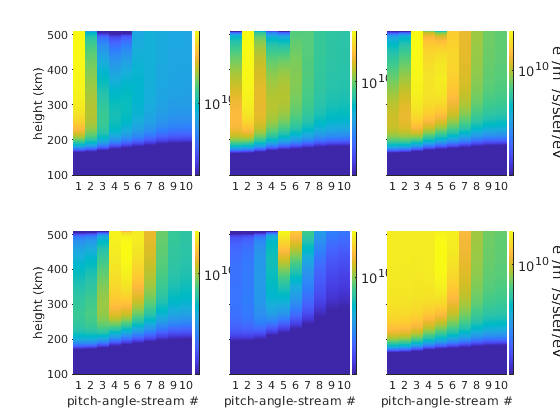 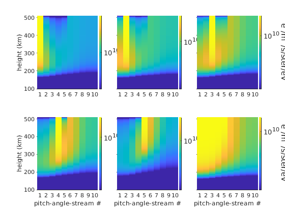
3 Pitch-angle spectra at highest altitude
It is of interest to look at the electron fluxes out of the ionsphere/thermosphere too. In order to do this we can look at the energy-pitch-angle spectra at the highest altitude, first we do this for three pairs of cases (with and without magnetic mirroring): precipitation in the first stream, the fourth stream and isotropic precipitation. This type of circular plot should be somewhat representative of how the electron-flux actualy varies in different directions at ~600 km of altitude. * Compare the energy-flux out of the ionosphere for the different cases.
figure
subplot(2,3,1)
plot_IezE_2DEtheta(h_atm/1e3,E,dE,Ie_zE_all{1},BeamW,mu_lims,numel(h_atm),[]);
subplot(2,3,2)
plot_IezE_2DEtheta(h_atm/1e3,E,dE,Ie_zE_all{4},BeamW,mu_lims,numel(h_atm),[]);
subplot(2,3,3)
plot_IezE_2DEtheta(h_atm/1e3,E,dE,Ie_zE_all{6},BeamW,mu_lims,numel(h_atm),[]);
subplot(2,3,4)
plot_IezE_2DEtheta(h_atm/1e3,E,dE,Ie_zE_all{1+6},BeamW,mu_lims,numel(h_atm),[]);
subplot(2,3,5)
plot_IezE_2DEtheta(h_atm/1e3,E,dE,Ie_zE_all{4+6},BeamW,mu_lims,numel(h_atm),[]);
subplot(2,3,6)
plot_IezE_2DEtheta(h_atm/1e3,E,dE,Ie_zE_all{6+6},BeamW,mu_lims,numel(h_atm),[]);
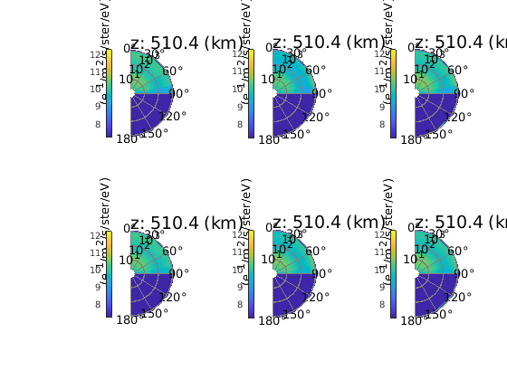 Then we present the same plots in rectangular grids for easier
inspection.
figure('name','Ie(z=600 km,E,\mu),B-mirror') E_flux_up = zeros(12,1); E_flux_down = zeros(12,1); for i1 = 1:6 Ie_top = Ie_zE_all{i1}(numel(h_atm):numel(h_atm):end,:)./(BeamW'* ... dE(1:size(Ie_zE_all{1},2))*2*pi); Ie_topraw = Ie_zE_all{i1}(numel(h_atm):numel(h_atm):end,:); Ie_up(i1,:) = sum(Ie_topraw(6:10,:)); Ie_down(i1,:) = sum(Ie_topraw(1:5,:)); subplot(2,3,i1) pcolor(E(1:size(Ie_zE_all{1},2)),0.5:10.5,log10(Ie_top([1:end,end],:))) shading flat caxis([-6 0]+max(caxis)) set(gca,'ytick',1:10,'yticklabel',theta_str) if i1 == 3 || i1 == 6 colorbar_labeled('e^-/m^2/s/ster/eV','log') else colorbar_labeled('','log') end if i1 == 1 || i1 == 4 set(gca,'ytick',1:10,'yticklabel',theta_str) else set(gca,'ytick',1:10,'yticklabel','') end if i1 > 3 xlabel('Energy') end for i2 = 6:10 E_flux_up(i1) = E_flux_up(i1) + trapz(E(1:size(Ie_zE_all{1},2)),E(1:size(Ie_zE_all{1},2)).*Ie_topraw(i2,:)); end for i2 = 1:5 E_flux_down(i1) = E_flux_down(i1) + trapz(E(1:size(Ie_zE_all{1},2)),E(1:size(Ie_zE_all{1},2)).*Ie_topraw(i2,:)); end end figure('name','Ie(z=600 km,E,\mu),no-B-mirror') for i1 = 1:6 Ie_top = Ie_zE_all{i1+6}(numel(h_atm):numel(h_atm):end,:)./(BeamW'* ... dE(1:size(Ie_zE_all{1},2))*2*pi); Ie_topraw = Ie_zE_all{i1+6}(numel(h_atm):numel(h_atm):end,:); Ie_up(i1+6,:) = sum(Ie_topraw(6:10,:)); Ie_down(i1+6,:) = sum(Ie_topraw(1:5,:)); subplot(2,3,i1) pcolor(E(1:size(Ie_zE_all{1},2)),0.5:10.5,log10(Ie_top([1:end,end],:))) shading flat caxis([-6 0]+max(caxis)) set(gca,'ytick',1:10,'yticklabel',theta_str) if i1 == 3 || i1 == 6 colorbar_labeled('e^-/m^2/s/ster/eV','log') else colorbar_labeled('','log') end if i1 == 1 || i1 == 4 set(gca,'ytick',1:10,'yticklabel',theta_str) else set(gca,'ytick',1:10,'yticklabel','') end if i1 > 3 xlabel('Energy') end for i2 = 6:10 E_flux_up(i1+6) = E_flux_up(i1+6) + trapz(E(1:size(Ie_zE_all{1},2)),E(1:size(Ie_zE_all{1},2)).*Ie_topraw(i2,:)); end for i2 = 1:5 E_flux_down(i1+6) = E_flux_down(i1+6) + trapz(E(1:size(Ie_zE_all{1},2)),E(1:size(Ie_zE_all{1},2)).*Ie_topraw(i2,:)); end end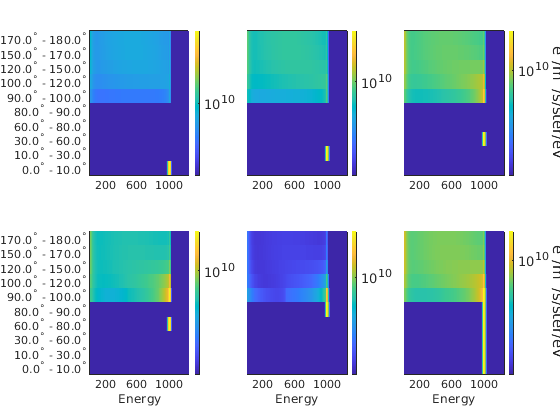 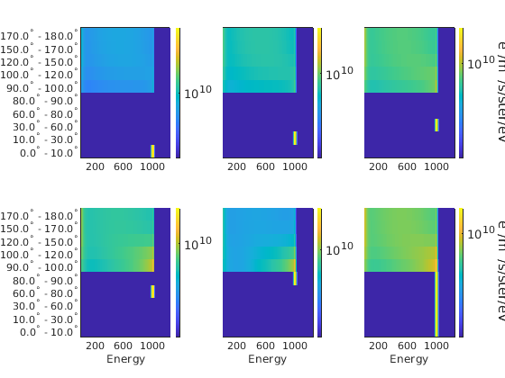
Excitation and ionization-rates
The effect of the electron-precipitation is ionization, production of secondary electrons and excitation of atoms and molecules (that emit the photons we see as aurora.) Here we calculate the excitation rates as a function of altitude for a couple of excited states and ionization-profiles. * Explain the differences in altitude-profiles of the electron-impact excitation-profiles for the O(3p5P) state (that is calculated here as emX7774_O) for precipitation in the different cases. As well as the differences
emXS4278 = exc_4278(E); emXS6730 = exc_6730_N2(E); emXS8446_O = exc_8446_O(E); emXS8446_O2 = exc_8446_O2(E); emX7774_O = exc_7774_O(E); emX7774_O2 = exc_7774_O2(E); excXS_O1D = exc_O1D(E); excXS_O1S = exc_O1S(E); dE = diff(E); dE = dE([1:end,end]); XsO = get_all_xs('O',E+dE/2); XsO2 = get_all_xs('O2',E+dE/2); XsN2 = get_all_xs('N2',E+dE/2); load N2_levels.dat load O2_levels.dat load O_levels.dat % Here we calculate the total cross-section for production of % secondary electrons (we count the double-ionization-cross- % sections twice) XsOi = O_levels(:,2)'*XsO; XsO2i = O2_levels(:,2)'*XsO2; XsN2i = N2_levels(:,2)'*XsN2; XsN2A3 = XsN2(13,:); for i1 = 1:numel(Ie_zE_all) szIzE = size(Ie_zE_all{i1}); Q4278(:,i1) = exc_z_of_Ie_zE(h_atm,E(1:szIzE(2)),Ie_zE_all{i1},nN2,emXS4278(1:szIzE(2))); Q6730(:,i1) = exc_z_of_Ie_zE(h_atm,E(1:szIzE(2)),Ie_zE_all{i1},nN2,emXS6730(1:szIzE(2))); Q8446(:,i1) = exc_z_of_Ie_zE(h_atm,E(1:szIzE(2)),Ie_zE_all{i1},nO,emXS8446_O(1:szIzE(2))) + ... exc_z_of_Ie_zE(h_atm,E(1:szIzE(2)),Ie_zE_all{i1},nO2,emXS8446_O2(1:szIzE(2))); Q7774(:,i1) = exc_z_of_Ie_zE(h_atm,E(1:szIzE(2)),Ie_zE_all{i1},nO,emX7774_O(1:szIzE(2))) + ... exc_z_of_Ie_zE(h_atm,E(1:szIzE(2)),Ie_zE_all{i1},nO2,emX7774_O2(1:szIzE(2))); Q8446_O(:,i1) = exc_z_of_Ie_zE(h_atm,E(1:szIzE(2)),Ie_zE_all{i1},nO,emXS8446_O(1:szIzE(2))); Q7774_O(:,i1) = exc_z_of_Ie_zE(h_atm,E(1:szIzE(2)),Ie_zE_all{i1},nO,emX7774_O(1:szIzE(2))); Q8446_O2(:,i1) = exc_z_of_Ie_zE(h_atm,E(1:szIzE(2)),Ie_zE_all{i1},nO2,emXS8446_O2(1:szIzE(2))); Q7774_O2(:,i1) = exc_z_of_Ie_zE(h_atm,E(1:szIzE(2)),Ie_zE_all{i1},nO2,emX7774_O2(1:szIzE(2))); QO1D(:,i1) = exc_z_of_Ie_zE(h_atm,E(1:szIzE(2)),Ie_zE_all{i1},nO,excXS_O1D(1:szIzE(2))); QO1S(:,i1) = exc_z_of_Ie_zE(h_atm,E(1:szIzE(2)),Ie_zE_all{i1},nO,excXS_O1S(1:szIzE(2))); QN2i(:,i1) = exc_z_of_Ie_zE(h_atm,E(1:szIzE(2)),Ie_zE_all{i1},nN2,XsN2i(1:szIzE(2))); QO2i(:,i1) = exc_z_of_Ie_zE(h_atm,E(1:szIzE(2)),Ie_zE_all{i1},nO2,XsO2i(1:szIzE(2))); QOi(:,i1) = exc_z_of_Ie_zE(h_atm,E(1:szIzE(2)),Ie_zE_all{i1},nO,XsOi(1:szIzE(2))); QN2A3(:,i1) = exc_z_of_Ie_zE(h_atm,E(1:szIzE(2)),Ie_zE_all{i1},nN2,XsN2A3(1:szIzE(2))); end % Plot the O(3p5P) production from electron collisions with atomic % oxygen figure phB = semilogx(Q7774_O(:,1:6),h_atm/1e3,'linewidth',2); xlabel('excitation rate (/m^3/s)') ylabel('altitude (km)') title('O(3p^5P) electron-O impact excitation rate') axis([100 1e8 120 480]) hold on phnoB = semilogx(Q7774_O(:,7:end),h_atm/1e3,'--','linewidth',2); cmlines(phB) cmlines(phB) cmlines(phnoB) legend([phB(:)',phnoB(:)'],... 'stream 1',... 'stream 2',... 'stream 3',... 'stream 4',... 'stream 5',... 'streams 1-5',... 'stream 1',... 'stream 2',... 'stream 3',... 'stream 4',... 'stream 5',... 'streams 1-5') [~,iZnB] = max(Q7774_O(:,7:end)); [~,iZB] = max(Q7774_O(:,1:6)); [h_atm(iZB)'/1e3;h_atm(iZnB)'/1e3] figure pcolor(0.5:6.5,h_atm/1e3,log10(Q7774_O(:,[1:6,6]))),shading flat,axis([0.5 6.5 100 500]),caxis([-6 0]+max(caxis)) hold on title('O(3p^5P) electron-O impact excitation rate') colorbar_labeled('excitation rate (/m^3/s)','log') ylabel('altitude (km)') xlabel('Pitch-angle-stream-case') phQ = plot(1:6,[h_atm(iZB)'/1e3;h_atm(iZnB)'/1e3],'k.','markersize',18); set(phQ(1),'marker','.') set(phQ(2),'marker','.','color','w')
ans = 180.1195 183.0556 190.9640 198.8117 196.1165 188.5040 179.4050 180.8417 187.7009 197.0060 201.5877 186.9062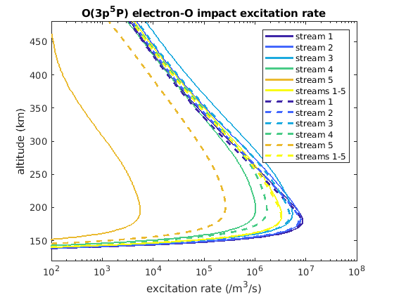 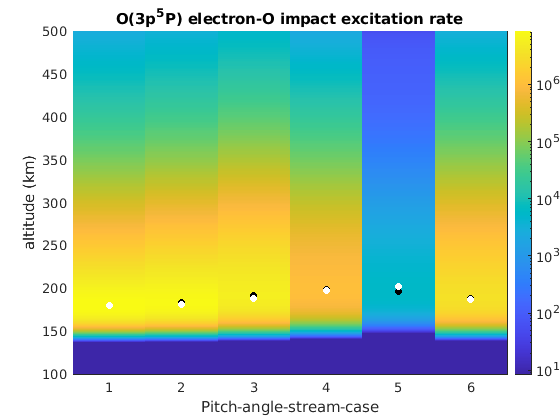
Same thing with the production of N2(B3) emitting at 6730 Å
figure phB = semilogx(Q6730(:,1:6),h_atm/1e3,'linewidth',2); xlabel('excitation rate (/m^3/s)') ylabel('altitude (km)') title('N_2(B^3) electron-N2 impact excitation rate') axis([100 1e8 120 480]) hold on phnoB = semilogx(Q6730(:,7:end),h_atm/1e3,'--','linewidth',2); cmlines(phB) cmlines(phB) cmlines(phnoB) legend([phB(:)',phnoB(:)'],... 'stream 1',... 'stream 2',... 'stream 3',... 'stream 4',... 'stream 5',... 'streams 1-5',... 'stream 1',... 'stream 2',... 'stream 3',... 'stream 4',... 'stream 5',... 'streams 1-5') [~,iZnB] = max(Q6730(:,7:end)); [~,iZB] = max(Q6730(:,1:6)); [h_atm(iZB)'/1e3;h_atm(iZnB)'/1e3] figure pcolor(0.5:6.5,h_atm/1e3,log10(Q6730(:,1:7))),shading flat,axis([0.5 6.5 100 500]),caxis([-6 0]+max(caxis)) title('N_2(B^3) electron-N2 impact excitation rate') colorbar_labeled('excitation rate (/m^3/s)','log') ylabel('altitude (km)') xlabel('Pitch-angle-stream-case') hold on phQ = plot(1:6,[h_atm(iZB)'/1e3;h_atm(iZnB)'/1e3],'k.','markersize',18); set(phQ(1),'marker','.') set(phQ(2),'marker','.','color','w')
ans = 175.2771 177.3073 181.5718 186.1197 184.5714 180.1195 174.6150 175.9465 180.1195 185.3415 187.7009 179.4050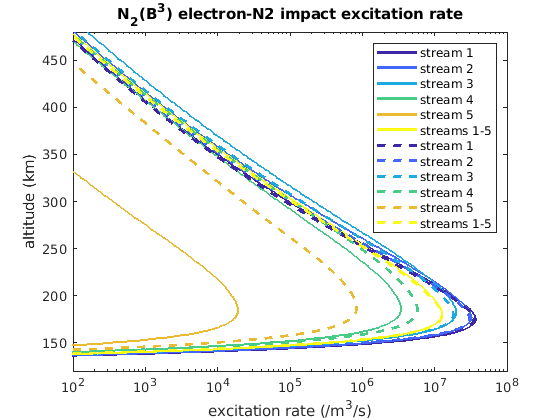 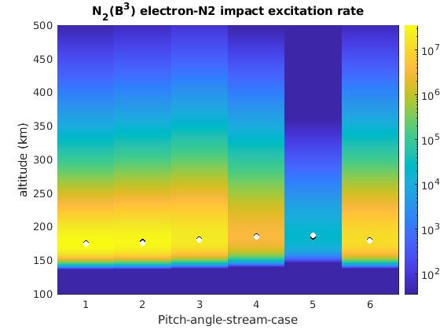